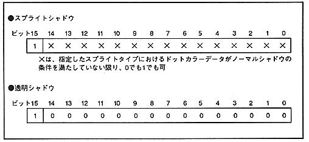
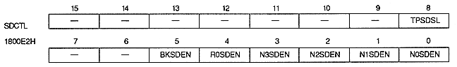

Shadow enable bit : Shadow enable bit
| N0SDEN | 1800E2H | Bit 0 | NBG0 (or RBG1) |
| N1SDEN | 1800E2H | Bit 1 | NBG1 (or EXBG) |
| N2SDEN | 1800E2H | Bit 2 | For NBG2 |
| N3SDEN | 1800E2H | Bit 3 | For NBG3 |
| R0SDEN | 1800E2H | Bit 4 | For RBG0 |
| BKSDEN | 1800E2H | Bit 5 | For BACK |
∙ Sprite shadow sprites always use the shadow function for themselves.